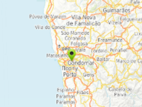

Example of custom marker system for uGUI.
Requirement: Unity v4.6+
Usage instructions:
Add this script to map GameObject.
Use uGUICustomMarkerEngineExample.AddMarker to create new marker.
Add this script to map GameObject.
Use uGUICustomMarkerEngineExample.AddMarker to create new marker.
uGUICustomMarkerEngineExample.cs
/* INFINITY CODE 2013-2016 */
/* http://www.infinity-code.com */
#if !UNITY_4_3 && !UNITY_4_5
using System.Collections.Generic;
using UnityEngine;
namespace InfinityCode.OnlineMapsExamples
{
[AddComponentMenu("Infinity Code/Online Maps/Examples (API Usage)/uGUICustomMarkerEngineExample")]
public class uGUICustomMarkerEngineExample : MonoBehaviour
{
private static uGUICustomMarkerEngineExample _instance;
private static List<uGUICustomMarkerExample> markers;
public RectTransform markerContainer;
public GameObject markerPrefab;
private GameObject container;
public static uGUICustomMarkerEngineExample instance
{
get { return _instance; }
}
public static void AddMarker(Vector2 position, string text)
{
_instance._AddMarker(position, text);
}
private void _AddMarker(Vector2 position, string text)
{
GameObject markerGameObject = Instantiate(markerPrefab) as GameObject;
(markerGameObject.transform as RectTransform).SetParent(markerContainer);
uGUICustomMarkerExample marker = markerGameObject.GetComponent<uGUICustomMarkerExample>();
marker.text = text;
marker.position = position;
markers.Add(marker);
UpdateMarker(marker);
}
private void OnEnable()
{
_instance = this;
markers = new List<uGUICustomMarkerExample>();
}
private void Start ()
{
OnlineMaps.instance.OnChangePosition += UpdateMarkers;
OnlineMaps.instance.OnChangeZoom += UpdateMarkers;
if (OnlineMapsControlBase.instance is OnlineMapsControlBase3D)
OnlineMapsControlBase3D.instance.OnCameraControl += UpdateMarkers;
AddMarker(new Vector2(), "12");
}
private void UpdateMarkers()
{
foreach (uGUICustomMarkerExample marker in markers) UpdateMarker(marker);
}
private void UpdateMarker(uGUICustomMarkerExample marker)
{
OnlineMaps api = OnlineMaps.instance;
Vector2 pos = marker.position;
Vector2 tl = api.topLeftPosition;
Vector2 br = api.bottomRightPosition;
if (pos.x < tl.x || pos.x > br.x || pos.y < br.y || pos.y > tl.y)
{
marker.gameObject.SetActive(false);
return;
}
Vector2 screenPosition = OnlineMapsControlBase.instance.GetScreenPosition(pos);
RectTransform markerRectTransform = marker.transform as RectTransform;
if (!marker.gameObject.activeSelf)
{
marker.gameObject.SetActive(true);
}
screenPosition.y += markerRectTransform.rect.height / 2;
Vector2 point;
RectTransformUtility.ScreenPointToLocalPointInRectangle(markerRectTransform.parent as RectTransform, screenPosition, null, out point);
markerRectTransform.localPosition = point;
}
}
}
#endifuGUICustomMarkerExample.cs
/* INFINITY CODE 2013-2016 */
/* http://www.infinity-code.com */
#if !UNITY_4_3 && !UNITY_4_5
using UnityEngine;
using UnityEngine.UI;
namespace InfinityCode.OnlineMapsExamples
{
[AddComponentMenu("")]
public class uGUICustomMarkerExample:MonoBehaviour
{
public Vector2 position;
public string text;
public Text textField;
public float height;
public void Start()
{
textField.text = text;
}
}
}
#endif